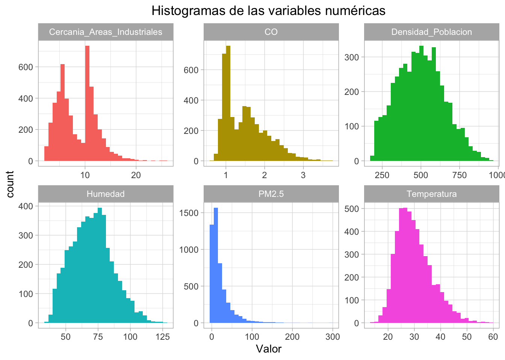
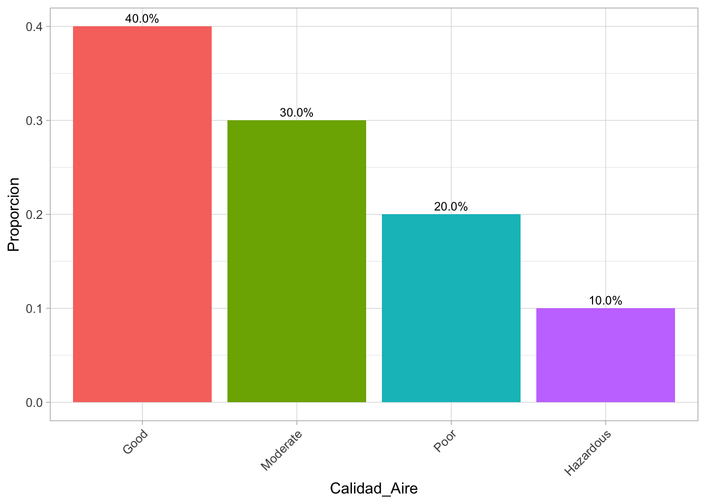
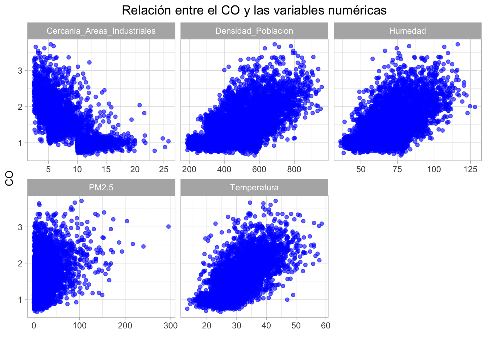
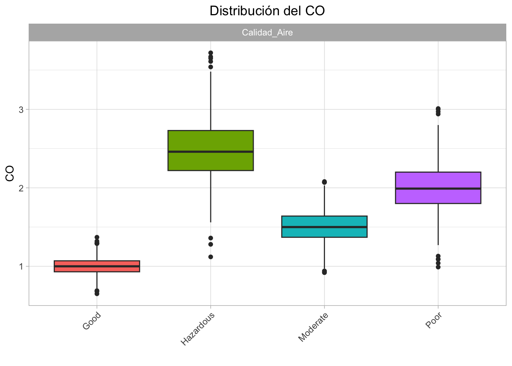
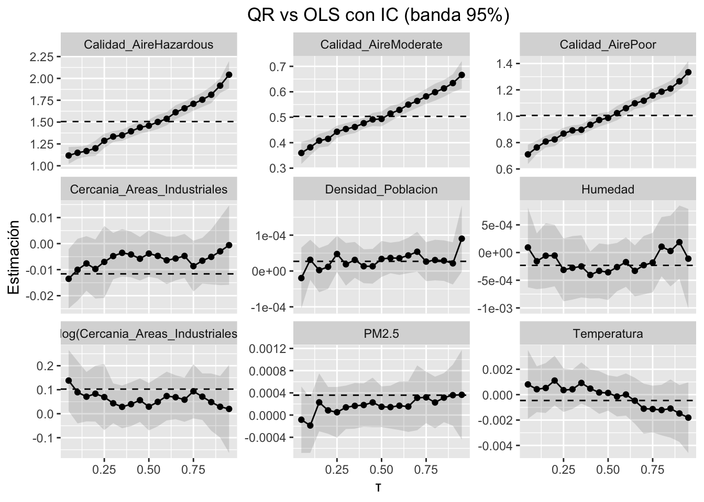

| Variables | Unidades | Descripción |
|---|---|---|
| Temperatura | °C | Temperatura media de la región |
| Humedad | % | Humedad relativa registrada en la región |
| Concentración PM2.5 | µg/m³ | Niveles de partículas finas |
| Concentración PM10 | µg/m³ | Niveles de partículas gruesas (no se trabajará en el estudio) |
| Concentración NO2 | ppb | Niveles de dióxido de nitrógeno (no se trabajará en el estudio) |
| Concentración SO2 | ppb | Niveles de dióxido de azufre (no se trabajará en el estudio) |
| Cercanía a Áreas Industriales | km | Distancia a la zona industrial más cercana |
| Densidad de población | personas/km² | Número de personas por kilómetro cuadrado en la región |
| Calidad del aire | Categorías | Clasificación: Bueno, Moderado, Pobre, Peligroso |
| Concentración de CO | ppb | Variable objetivo: Niveles de monóxido de carbono |
Taller 2 - Modelo Regresión Cuantílica
0. Información general
Este trabajo consiste identificar un caso real donde el interés esté en colas de la distribución (poblaciones muy vulnerables o muy favorecidas) y mostrar cómo la regresión cuantil (QR) revela patrones que el promedio (OLS) oculta.
En este caso, haremos el ejercicio con el dataset “Evaluación de la polución y calidad del aire” de kaggle: https://www.kaggle.com/datasets/mujtabamatin/air-quality-and-pollution-assessment. Este dataset se enfoca en envaluaciones de la calidad de aire en varias regiones del mundo. El dataset contiene 5000 muestras capturando factores ambientales y demográficos que influyen en los niveles de polución.
La pregunta de investigación es: ¿Cómo influyen los facotres meteorológicos, de densidad de población y cercanía a zonas industriales los diferentes niveles de CO?
1. Análisis exploratorio
Las variables a analizar son las siguientes:
Los percentiles a trabajar serán: 0.05, 0.25, 0.50, 0.75 y 0.95
A continuación, se hace un análisis exploratorio de los datos:
Visualización de los 10 primeros registros del conjunto de datos:| Temperatura | Humedad | PM2.5 | CO | Cercania_Areas_Industriales | Densidad_Poblacion | Calidad_Aire |
|---|---|---|---|---|---|---|
| 29.8 | 59.1 | 5.2 | 1.72 | 6.3 | 319 | Moderate |
| 28.3 | 75.6 | 2.3 | 1.64 | 6.0 | 611 | Moderate |
| 23.1 | 74.7 | 26.7 | 1.63 | 5.2 | 619 | Moderate |
| 27.1 | 39.1 | 6.1 | 1.15 | 11.1 | 551 | Good |
| 26.5 | 70.7 | 6.9 | 1.01 | 12.7 | 303 | Good |
| 39.4 | 96.6 | 14.6 | 1.82 | 3.1 | 674 | Hazardous |
| 41.7 | 82.5 | 1.7 | 1.80 | 4.6 | 735 | Poor |
| 31.0 | 59.6 | 5.0 | 1.38 | 6.3 | 443 | Moderate |
| 29.4 | 93.8 | 10.3 | 2.03 | 5.4 | 486 | Poor |
| 33.2 | 80.5 | 11.1 | 1.69 | 4.9 | 535 | Poor |
1.1. Análisis univariado
| Temperatura | Humedad | PM2.5 | CO | Cercania_Areas_Industriales | Densidad_Poblacion | Calidad_Aire | |
|---|---|---|---|---|---|---|---|
| Min. :13.40 | Min. : 36.00 | Min. : 0.00 | Min. :0.65 | Min. : 2.500 | Min. :188.0 | Good :2000 | |
| 1st Qu.:25.10 | 1st Qu.: 58.30 | 1st Qu.: 4.60 | 1st Qu.:1.03 | 1st Qu.: 5.400 | 1st Qu.:381.0 | Moderate :1500 | |
| Median :29.00 | Median : 69.80 | Median : 12.00 | Median :1.41 | Median : 7.900 | Median :494.0 | Poor :1000 | |
| Mean :30.03 | Mean : 70.06 | Mean : 20.14 | Mean :1.50 | Mean : 8.425 | Mean :497.4 | Hazardous: 500 | |
| 3rd Qu.:34.00 | 3rd Qu.: 80.30 | 3rd Qu.: 26.10 | 3rd Qu.:1.84 | 3rd Qu.:11.100 | 3rd Qu.:600.0 | NA | |
| Max. :58.60 | Max. :128.10 | Max. :295.00 | Max. :3.72 | Max. :25.800 | Max. :957.0 | NA |
El resumen estadístico nos ofrece una primera vista de las variables. La Concentración de CO, que es nuestra variable objetivo de este estudio, varía desde 0.65 ppb hasta 3.72 ppb, con una media de 1.50 ppb y una mediana de 7.9 ppb. La cercanía entre la media y la mediana sugiere una distribución relativamente simétrica. Otras variables como PM2.5 y Densidad de Población muestran una diferencia más marcada entre la media y la mediana, lo que indica una posible asimetría en sus distribuciones.
1.1.1. Distribución de las variables numéricas
Puntos Clave:
- Cercania_Areas_industriales: Esta variable presenta una distribución bimodal (con dos picos claros), lo que sugiere que los datos, uno de localidades muy cercanas a zonas industriales (el primer pico) y otro grupo un poco más alejado (el segundo pico, más alto). También tiene un sesgo a la derecha, indicando que hay algunas localidades excepcionalmente cercanas.
- CO: La distribución de la (CO) es marcadamente asimétrica, con un fuerte sesgo positivo carbono(a la derecha). Esto indica que la gran mayoría de las mediciones registran niveles de CO muy bajos, agrupándose cerca del valor mínimo. Además, presenta un segundo pico no muy marcado, pero podemos ver que presenta una distribución bimodal.
- PM2.5: De manera muy similar al CO, la concentración de (PM2.5) presenta una distribución con un sesgo positivo excesivo. La considerable mayoría de los datos se concentra en valores muy bajos, prácticamente cercanos a cero, lo que representa condiciones de aire generalmente limpio. No obstante, la distribución se caracteriza por una cola extendida y una gran cantidad de valores atípicos en el extremo superior, evidenciando zonas de muy mala calidad del aire con picos de contaminación severa.
- Temperatura y Densidad de Población: Presentan rangos amplios y distribuciones simétricas, cubriendo diversas condiciones climáticas. La mayoría de los valores se concentran alrededor de la media, con una disminución gradual hacia los extremos.
- Humedad: Muestra una clara asimetría positiva, pero con un ligero sesgo a la izquierda (asimetría negativa). Esto indica que son más frecuentes los valores de humedad altos (por encima del 50%) que los muy bajos.

1.1.2. Distribución de las variables categóricas
Puntos Clave:
- Calidad_Aire: La variable Calidad del Aire presenta una distribución heterogénea pero relativamente balanceada entre sus cuatro categorías. La mayor proporción corresponde a la categoría Good (40%), seguida por Moderate (30%), lo que indica que en la mayoría de las observaciones la calidad del aire se encuentra en niveles aceptables o moderados. Sin embargo, también se evidencia que un 20% de los registros corresponden a condiciones Poor y un 10% a situaciones Hazardous, reflejando episodios de contaminación con riesgos significativos para la salud. Esta distribución es adecuada para el análisis, ya que garantiza variabilidad suficiente en los datos sin presentar un desbalance extremo entre clases, aunque la menor representación de la categoría Hazardous requiere especial atención para evitar que sea subestimada en los modelos predictivos.

1.2. Análisis bivariado

Variables numéricas vs CO
El CO con las demás variables numéricas presentan relaciones medias-altas, especialmente con la temperatura (relación positiva), húmedad (positiva), densidad de población (positiva) y cercanía a áreas industriales (negativa).
- Temperatura: En cuanto a la relación con la temperatura, se puede ver que a mayor temperatura, las concentraciones de CO tienden a ser mayores.
- Húmedad: muy similar a la temperatura en cuanto a su relación. Sin embgargo, en zonas medias de húmedad (60%-90%) hay una mayor variabilidad de concentración de CO.
- Densidad de población: comportamiento similar a los anteriores. Sin embargo, en zonas de baja concentración de población (alrededor de 200 a 300 personas/km), la concentración de CO tiende a ser constante, moviéndose entre 0.5 y 1.5 ppb.
- Cercanía a áreas industriales: en este caso, la relación es inversa: entre más cercano esté una región a zonas industriales, la concentración de CO tiende a ser mayor. La relación no es del todo lineal.
Variables categóricas vs CO

En cuanto a la calidad del aire, se ve que el CO influye en gran medida: en zonas donde la calidad del aire es buena o moderada, los niveles de CO son menores, mientras en regiones con calidad de aire pobre o peligroso, el nivel de CO es mayor.
2. Modelo de regresión cuantílica
Modelo completo
\[ Q_\tau(CO|X) = \beta_0(\tau) + \beta_1(\tau)Temperatura + \beta_2(\tau)Humedad + \beta_3(\tau)Cercania Areas Industriales + \]
\[ \beta_4(\tau)log(Cercania Areas Industriales) + \beta_5(\tau)Densidad_Poblacion + \beta_6(\tau)Calidad Aire \]
2.1. Modelo OLS
Call:
lm(formula = form, data = df)
Residuals:
Min 1Q Median 3Q Max
-1.42083 -0.11555 -0.00125 0.11103 1.19823
Coefficients:
Estimate Std. Error t value Pr(>|t|)
(Intercept) 8.967e-01 4.954e-02 18.101 < 2e-16 ***
Temperatura -4.611e-04 7.148e-04 -0.645 0.51892
Humedad -2.316e-04 2.552e-04 -0.907 0.36420
PM2.5 3.579e-04 1.416e-04 2.527 0.01154 *
Cercania_Areas_Industriales -1.162e-02 4.248e-03 -2.736 0.00624 **
I(log(Cercania_Areas_Industriales)) 1.025e-01 3.438e-02 2.981 0.00289 **
Densidad_Poblacion 2.691e-05 2.706e-05 0.994 0.32009
Calidad_AireModerate 5.033e-01 1.227e-02 41.031 < 2e-16 ***
Calidad_AirePoor 1.006e+00 1.737e-02 57.911 < 2e-16 ***
Calidad_AireHazardous 1.506e+00 2.371e-02 63.509 < 2e-16 ***
---
Signif. codes: 0 '***' 0.001 '**' 0.01 '*' 0.05 '.' 0.1 ' ' 1
Residual standard error: 0.2231 on 4990 degrees of freedom
Multiple R-squared: 0.8333, Adjusted R-squared: 0.833
F-statistic: 2773 on 9 and 4990 DF, p-value: < 2.2e-161. Temperatura: -0.00046 Diferencia no significativa (p = 0.519; IC95% cruza 0). Con estos datos, no hay evidencia de efecto promedio de la temperatura sobre el CO.
2. Humedad: -0.00023 Diferencia no significativa (p = 0.346; IC95% cruza 0). Con estos datos, no hay evidencia de efecto promedio de la humedad sobre el CO.
3. Partículas finas (PM2.5): 0.00036 Cada nivel adicional de partículas finas en el aire, se asocia con +0.00035 unidades de CO (p. < 0.05; IC95% ≈ [0.0008, 0.00064]), manteniendo lo demás constante.
4. Cercanía a áreas industriales: -0.0162 y log(Cercania_Areas_Industriales): 0.1025 La cercanía a zonas industriales aumenta los niveles de CO en las regiones, es decir, entre más cerca a áreas industriales, mayores son los niveles de CO. Sin embargo, entre más lejos de zonas industriales, los niveles de CO bajan pero no constantemente. El efecto marginal es el siguiente:
\[ \frac{\partial CO}{\partial Cercania Areas Industriales} = -0.0162 + \frac{0.1025}{Cercania Areas Industriales} \]
Si está muy cerca a áreas industriales, al disminuir 1 km aumenta 0.0863 los niveles de CO, alejarse 5 km aumenta los niveles de CO en 0.0043. Y si se encuentra a 10 km de las áreas industriales, un aumento en 1 km de las áreas industriales, los niveles de CO disminuyen en -0.006 bbp.
Ambos son significativos (p. < 0.01).
5. Densidad de población: 0.000027 Diferencia no significativa (p = 0.32; IC95% cruza 0). Con estos datos, no hay evidencia de efecto promedio de la densidad de población sobre el CO.
6. Calidad del aire A mismo nivel de partículas finas y cercanía a áreas industriales:
- Si la calidad del aire es moderada, el nivel de CO aumenta en 0.503 unidades vs si la calidad de aire es bueno (p. < 0.001; IC95% ≈ [0.478, 0.528]).
- Si la calidad del aire es pobre, el nivel de CO aumenta en 1.006 unidades vs si la calidad de aire es bueno (p. < 0.001; IC95% ≈ [0.972, 1.04]).
- Si la calidad del aire es peligrosa, el nivel de CO aumenta en 1.506 unidades vs si la calidad de aire es bueno (p. < 0.001; IC95% ≈ [1.459, 1.553]).
7. Medidas globales del Modelo A nivel global, el modelo tiene los siguientes valores:
- Residual standard error (0.2231): en promedio, el modelo se equivoca ±0.22 unidades al predecir.
- R² = 0.8333: el modelo explica aproximadamente el 83% de la variabilidad de la variable dependiente → muy buen ajuste.
- Adjusted R² (0.833): prácticamente igual, lo que indica que no hay sobreajuste.
- F-statistic (2773, p < 2.2e-16): el modelo en su conjunto es altamente significativo.
2.2. Modelo QR
Aquí analizamos cómo los efectos de los predictores cambian en diferentes puntos de la distribución de CO: los cuantiles 0.05 (muy baja contaminación), 0.50 (mediana) y 0.95 (muy alta contaminación).
Call: rq(formula = form, tau = taus, data = df)
tau: [1] 0.05
Coefficients:
Value Std. Error t value Pr(>|t|)
(Intercept) 0.63730 0.11399 5.59091 0.00000
Temperatura 0.00081 0.00138 0.58359 0.55952
Humedad 0.00009 0.00034 0.27377 0.78427
PM2.5 -0.00008 0.00025 -0.33092 0.74072
Cercania_Areas_Industriales -0.01351 0.00670 -2.01765 0.04368
I(log(Cercania_Areas_Industriales)) 0.13814 0.07377 1.87259 0.06118
Densidad_Poblacion -0.00002 0.00005 -0.43526 0.66339
Calidad_AireModerate 0.35961 0.02151 16.71924 0.00000
Calidad_AirePoor 0.71069 0.03512 20.23738 0.00000
Calidad_AireHazardous 1.11754 0.05404 20.68166 0.00000
Call: rq(formula = form, tau = taus, data = df)
tau: [1] 0.25
Coefficients:
Value Std. Error t value Pr(>|t|)
(Intercept) 0.83442 0.09982 8.35961 0.00000
Temperatura 0.00036 0.00090 0.39626 0.69193
Humedad -0.00031 0.00025 -1.26351 0.20646
PM2.5 0.00005 0.00022 0.23141 0.81700
Cercania_Areas_Industriales -0.00703 0.00671 -1.04843 0.29449
I(log(Cercania_Areas_Industriales)) 0.06917 0.06691 1.03385 0.30126
Densidad_Poblacion 0.00005 0.00002 1.91577 0.05545
Calidad_AireModerate 0.44299 0.01208 36.67906 0.00000
Calidad_AirePoor 0.86837 0.02480 35.01108 0.00000
Calidad_AireHazardous 1.28625 0.04119 31.22803 0.00000
Call: rq(formula = form, tau = taus, data = df)
tau: [1] 0.5
Coefficients:
Value Std. Error t value Pr(>|t|)
(Intercept) 0.97887 0.07884 12.41528 0.00000
Temperatura 0.00013 0.00088 0.15088 0.88007
Humedad -0.00036 0.00023 -1.52065 0.12841
PM2.5 0.00015 0.00019 0.79511 0.42659
Cercania_Areas_Industriales -0.00382 0.00485 -0.78802 0.43072
I(log(Cercania_Areas_Industriales)) 0.02924 0.05241 0.55792 0.57692
Densidad_Poblacion 0.00003 0.00002 1.41053 0.15845
Calidad_AireModerate 0.49335 0.01471 33.53676 0.00000
Calidad_AirePoor 0.98726 0.02342 42.15572 0.00000
Calidad_AireHazardous 1.45891 0.03807 38.32461 0.00000
Call: rq(formula = form, tau = taus, data = df)
tau: [1] 0.75
Coefficients:
Value Std. Error t value Pr(>|t|)
(Intercept) 0.96649 0.09117 10.60051 0.00000
Temperatura -0.00113 0.00084 -1.35119 0.17670
Humedad -0.00018 0.00029 -0.62966 0.52894
PM2.5 0.00032 0.00024 1.34595 0.17838
Cercania_Areas_Industriales -0.00865 0.00479 -1.80415 0.07127
I(log(Cercania_Areas_Industriales)) 0.09348 0.05794 1.61347 0.10671
Densidad_Poblacion 0.00003 0.00003 0.96548 0.33435
Calidad_AireModerate 0.58201 0.01479 39.36409 0.00000
Calidad_AirePoor 1.15693 0.02766 41.82522 0.00000
Calidad_AireHazardous 1.70920 0.04204 40.66085 0.00000
Call: rq(formula = form, tau = taus, data = df)
tau: [1] 0.95
Coefficients:
Value Std. Error t value Pr(>|t|)
(Intercept) 1.13414 0.15474 7.32939 0.00000
Temperatura -0.00181 0.00142 -1.27391 0.20275
Humedad -0.00011 0.00045 -0.24584 0.80582
PM2.5 0.00036 0.00042 0.86548 0.38682
Cercania_Areas_Industriales -0.00059 0.00811 -0.07306 0.94176
I(log(Cercania_Areas_Industriales)) 0.01992 0.09739 0.20455 0.83793
Densidad_Poblacion 0.00009 0.00004 2.00975 0.04451
Calidad_AireModerate 0.66627 0.02704 24.63978 0.00000
Calidad_AirePoor 1.33356 0.04376 30.47538 0.00000
Calidad_AireHazardous 2.04209 0.08471 24.10583 0.00000| Variable | Q0.05 | Q0.25 | Q0.5 | Q0.75 | Q0.95 | OLS |
|---|---|---|---|---|---|---|
| Temperatura | 0.00081 | 0.00036 | 0.00013 | -0.00113 | -0.00181 | -0.00046 |
| Humedad | 0.00009 | -0.00031 | -0.00036 | -0.00018 | -0.00011 | -0.00023 |
| PM2.5 | -0.00008 | 0.00005 | 0.00015 | 0.00032 | 0.00036 | 0.00036 |
| Cercanía_Areas_Industriales | -0.01351 | -0.00703 | -0.00382 | -0.00865 | -0.00059 | -0.01620 |
| I(log(Cercanía_Areas_Industriales)) | 0.13814 | 0.06917 | 0.02924 | 0.09348 | 0.01992 | 0.10250 |
| Densidad_Población | -0.00002 | 0.00005 | 0.00003 | 0.00003 | 0.00009 | 0.00003 |
| Calidad_AireModerate | 0.35961 | 0.44299 | 0.49335 | 0.58201 | 0.66627 | 0.50300 |
| Calidad_AirePoor | 0.71069 | 0.86837 | 0.98726 | 1.15693 | 1.33356 | 1.00600 |
| Calidad_AireHazardous | 1.11754 | 1.28625 | 1.45891 | 1.70920 | 2.04209 | 1.50600 |
2.3. Resultados gráficos

- Temperatura: Su efecto va decreciendo a través de los cuantiles. Sin embargo, no es significativo en todos los tau. En cuánto al modelo OLS, sobreestima en la base y subestima en la cúpula.
- Humedad: Su impacto es positivo en el quantil 0.05, pero negativo creciente a partir del cuantil 0.25. Sin embargo, al igual que la temperatura, no es significativo en todos los tau.
- PM2.5: Tiene un impacto negativo en la base y va creciendo. Sin embargo, no es significativo en todos los tau.
- Cercania Areas Industriales: la parte lineal presenta una tendencia creciente en los taus, teniendo un impacto negativo (a mayor distancia, menores los nievels de CO). Sin embargo, esta variable solo es significativa en los cuantiles 0.05 y 0.75. La parte logarítmica presenta una tendencia decreciente en los taus, sin emabrgo no es significativa en ningún tau.
- Densidad de Población: su efecto es negativo en la base y tiende a crecer muy poco a través de los taus.Sin embargo, no es significativa.
- Calidad del aire: en todos los casos, la calidad del aire es significativa y es creciente en todos los taus. Además, con base en los gráficos, su crecimiento es constante (lineal), pero hay una brecha un poco mayor en la cúpula, lo que indica que los niveles de CO son cada vez mayores a medica que la calidad del aire va empeorando.
2.4. Modelo QR con interacción
Comparación de la cercanía con la calidad del aire:
Zonas de mejor calidad de aire (“Good” y “Moderate”): En estas condiciones, la cercanía a un área industrial tiene un efecto mínimo-medio sobre los niveles de CO. No importa si se analizan los niveles promedio (OLS), los más bajos (τ=0.05) o los más altos (τ=0.95); la proximidad no es un factor determinante. Aquí, el OLS y la QR cuentan una historia similar. Sin embargo, las pendientes en calidad de aire moderada muestran una inclinación positiva, aunque no muy pronunciada, indicando que la cercanía industrial empieza a tener un efecto perceptible, especialmente en los valores más altos de CO.
Zonas de baja calidad de aire (“Poor” y “Hazardous”): en estas zonas, la interacción entre calidad de aire y la cercania es mayor, lo que indica que la cercanía a zonas industriales se asocia claramente con un aumento en los niveles de CO. En zonas en el que la calidad de aire es pobre (poor), la proximidad a fuentes industriales contribuye significativamente a la contaminación por CO, afectando incluso los valores bajos (cuantil 0.05), mientras que, cuando la calidad del aire ya es peligrosa (Hazardous), la exposición a fuentes industriales es crítica. Incluso a distancias moderadas, los niveles de CO son peligrosamente altos.
Los dos puntos anteriores nos dicen que, la interacción entre la calidad del aire y la cercanía no es lineal ni uniforme, y la influencia de la cercanía es más fuerte en regiones en el que la calidad del aire es pobre o peligroso.